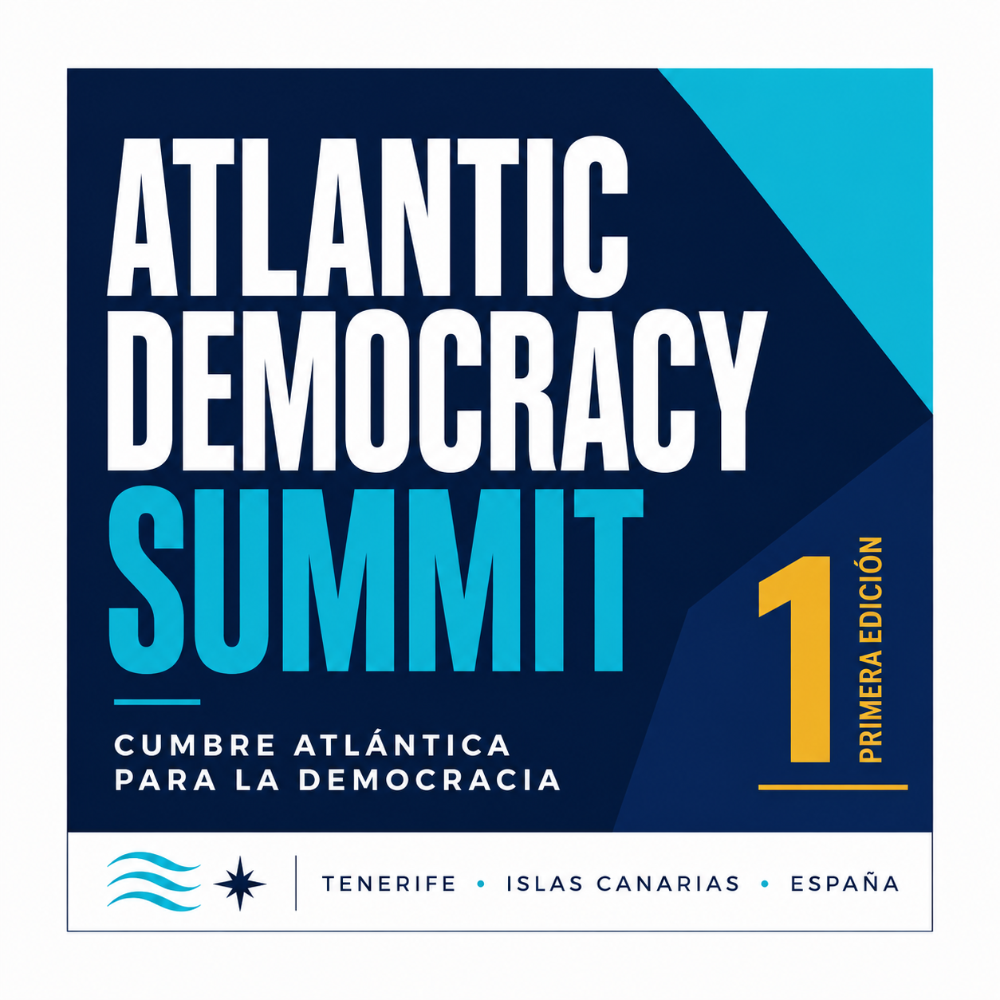

Canarias · Europa · África · América
Ideas. Freedom.
Atlantic future.
Canarias como puente para una democracia más abierta, culta e innovadora.
Conoce el Centro
Más allá de las fronteras.
Más cerca de las personas.
Nuestro propósito
Defender la democracia. Activar la libertad.
Somos el Centro Atlántico para la Democracia — Atlantic Democracy Center —, un centro independiente nacido en Canarias para generar conocimiento, impulsar iniciativas y conectar a quienes creen en una sociedad abierta, libre y democrática. Miramos a Europa, África y América como una conversación compartida.


Nuestros pilares
Seis formas de mover la conversación.
Arte
La cultura como herramienta de libertad, memoria y horizonte compartido.
Educación
Aprender a pensar, debatir y participar en una ciudadanía más consciente.
Investigación
Evidencia, informes y propuestas para decisiones públicas más rigurosas.
Innovación
Tecnología al servicio de la ciudadanía, los derechos y el criterio humano.
Sociedad civil
Redes que convierten valores democráticos en conversación y acción.
Relaciones atlánticas
Un Atlántico conectado por aliados, conocimiento e iniciativas compartidas.
Nuestras iniciativas
Ideas que salen a encontrar el mundo.

Encuentro principal
Atlantic Democracy Summit
Un encuentro internacional anual que reúne en Canarias a líderes políticos, instituciones, academia, empresas, sociedad civil, organizaciones internacionales y jóvenes líderes comprometidos con la democracia y la libertad.
Más que una conferencia: un foro independiente y de vocación permanente para compartir ideas, construir alianzas y generar soluciones para un Atlántico más libre, próspero y democrático.
Tenerife · Islas Canarias · España
Quiero conocer la próxima edición →Una perspectiva
El futuro se construye dialogando.
Las sociedades abiertas necesitan espacios para pensar, disentir y construir juntos. Ese es el trabajo común del Atlántico.
Leer la perspectiva →Atlántico2026
Únete a la conversación